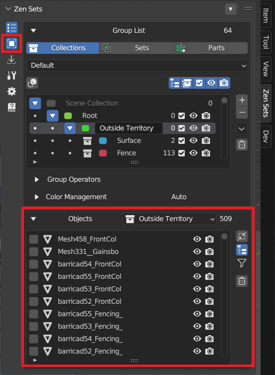
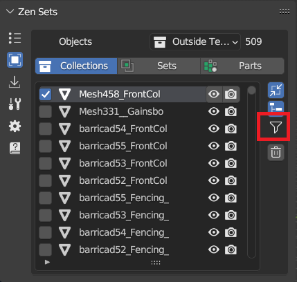
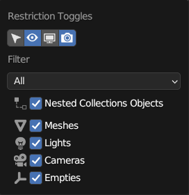

Objects Panel
Quick access to the list of group objects in Object Mode and edited objects in Edit Mode
|  |
|---|
View Selected Objects
Changes the view so that you can see the selected object in the center of the viewport
 |
|---|
Filter
The list of objects can be filtered by different conditions
|  |  |
|---|---|
- All - The default option, no restrictions
- Visible - List only the objects visible in the viewports. The global and temporary visibility settings are taken into consideration
- Selectable - List all objects whose Selectability option is enabled
- Different values - List object that have different values of restriction toggles

- Unique Data - List the objects with only unique data. Linked objects are dropped
- Vertex Groups - List only the objects with vertex groups
- Modifiers - List only the objects with modifiers